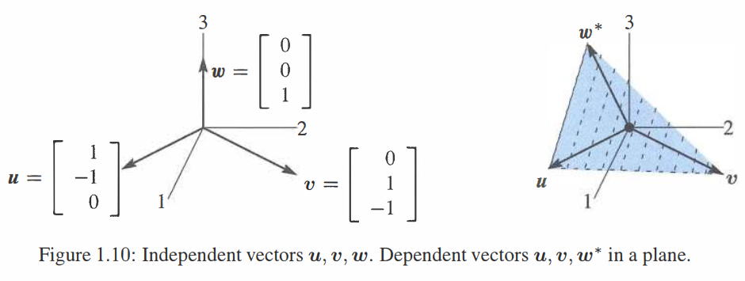

矩阵
\(A=\begin{bmatrix}1&2\\3&4\\5&6\end{bmatrix}\) 是一个3x2的矩阵：\(m=3\) 行且 \(n=2\) 列。
\(Ax=\begin{bmatrix}1&2\\3&4\\5&6\end{bmatrix}\begin{bmatrix}x_1\\x_2\end{bmatrix}\) 是列的一个线性组合：\(Ax=x_1 \begin{bmatrix}1\\3\\5\end{bmatrix}+x_2 \begin{bmatrix}2\\4\\6\end{bmatrix}\)。
\(Ax\) 的三个分量是 \(A\) 的3行与向量 \(x\) 的点积：\(\begin{bmatrix}1&2\\3&4\\5&6\end{bmatrix}\begin{bmatrix}7\\8\end{bmatrix}=\begin{bmatrix}1 \cdot 7+2 \cdot 8\\3 \cdot 7+4 \cdot 8\\5 \cdot 7+6 \cdot 8\end{bmatrix}=\begin{bmatrix}23\\53\\83\end{bmatrix}\)。
矩阵形式的方程组 \(Ax=b:\ \begin{bmatrix}2&5\\3&7\end{bmatrix}\begin{bmatrix}x_1\\x_2\end{bmatrix}=\begin{bmatrix}b_1\\b_2\end{bmatrix}\) 取代 \(\begin{matrix}2x_1+5x_2=b_1\\3x_1+7x_2=b_2\end{matrix}\)。
\(Ax=b\) 解可写成 \(x=A^{-1}b\)。但是有些矩阵不允许 \(A^{-1}\)。
本节以三个向量 \(u,v,w\) 开始。之后将会使用矩阵组合它们。 \[\textbf{三个向量}\quad u=\begin{bmatrix}1\\-1\\0\end{bmatrix}\quad v=\begin{bmatrix}0\\1\\-1\end{bmatrix}\quad w=\begin{bmatrix}0\\0\\1\end{bmatrix}.\] 它们在三维空间中的线性组合为 \(x_1u+x_2v+x_3w\)： \[\tag{1} x_1\begin{bmatrix}1\\-1\\0\end{bmatrix}+x_2\begin{bmatrix}0\\1\\-1\end{bmatrix}+x_3\begin{bmatrix}0\\0\\1\end{bmatrix}=\begin{bmatrix}x_1\\x_2-x_1\\x_3-x_2\end{bmatrix}.\] 重点来了：使用矩阵重写这个组合。向量 \(u,v,w\) 组成矩阵 \(A\) 的列。矩阵 “乘以” 向量 \(x_1,x_2,x_3\)： \[\tag{2} Ax=\begin{bmatrix}1&0&0\\-1&1&0\\0&-1&1\end{bmatrix}\begin{bmatrix}x_1\\x_2\\x_3\end{bmatrix}=\begin{bmatrix}x_1\\x_2-x_1\\x_3-x_2\end{bmatrix}.\] 数 \(x_1,x_2,x_3\) 作为向量 \(x\) 的分量。矩阵 \(A\) 乘以向量 \(x\) 与 方程(1)中三个列的组合 \(x_1u+x_2v+x_3w\) 相同。
这不仅仅是对 \(Ax\) 的定义，因为重写带来了视角上的关键改变。一开始是数 \(x_1,x_2,x_3\) 乘以向量。现在是矩阵在乘以那些数。矩阵 \(A\) 作用在向量 \(x\) 上，作用结果 \(Ax\) 是 \(A\) 的列一个线性组合 \(b\)。
为了展示作用过程，将 \(b_1,b_2,b_3\) 写作 \(Ax\) 的分量：
\[\tag{3} Ax=\begin{bmatrix}1&0&0\\-1&1&0\\0&-1&1\end{bmatrix}\begin{bmatrix}x_1\\x_2\\x_3\end{bmatrix}=\begin{bmatrix}x_1\\x_2-x_1\\x_3-x_2\end{bmatrix}=\begin{bmatrix}b_1\\b_2\\b_3\end{bmatrix}=b.\]
这里输入是 \(x\) 输出是 \(b=Ax\)。这里 \(A\) 是一个 “差异矩阵” 因为 \(b\) 包含了输入向量 \(x\) 的差。顶部的差为 \(x_1-x_0=x_1-0\)。
下面的例子展示了 \(x=(1,4,9)\) 的差：平方数在 \(x\) 中，奇数在 \(b\) 中。 \[x=\begin{bmatrix}1\\4\\9\end{bmatrix}=平方数 \qquad Ax=\begin{bmatrix}1-0\\4-1\\9-4\end{bmatrix}=\begin{bmatrix}1\\3\\5\end{bmatrix}=b.\] 一个4x4的差异矩阵将会保持上面的模式。下一个平方数 \(x_4=16\)。下一项差会是 \(x_4-x_3=16-9=7\) (下一个奇数)。这个矩阵一次性找到所有差 \(1,3,5,7\)。
重要说明：一次乘一行。你可能已经了解乘积 \(Ax\)，矩阵乘以向量。可能用不同的方式解释，使用行而不是列。通常是取每一行同 \(x\) 的点积：
\[\tag{5} Ax=\begin{bmatrix}1&0&0\\-1&1&0\\0&-1&1\end{bmatrix}\begin{bmatrix}x_1\\x_2\\x_3\end{bmatrix}=\begin{bmatrix}(1,0,0) \cdot (x_1,x_2,x_3)\\(-1,1,0) \cdot (x_1,x_2,x_3)\\(0,-1,1) \cdot (x_1,x_2,x_3)\end{bmatrix}\]
这些点积结果通过我们在方程(3)中的结果相同。处理 \(Ax\) 的一种新的方式是一次处理一列。线性组合是线性代数的关键，且输出 \(Ax\) 是 \(A\) 的列的一个线性组合。
处理具体的数时，你可以通过行对 \(Ax\) 相乘。处理字母时，按列处理是很好的方式。第 2 章将会在矩阵乘法时重复这些规则，并解释其中的思想。
线性方程组
视角的转变是重要的。到现在为止，数 \(x_1,x_2,x_3\) 是已知的，右边 \(b\) 是未知的。我们通过将 \(A\) 乘以 \(x\) 得到了向量的差。现在将 \(b\) 看成已知我们寻找 \(x\)。
之前的问题 ：计算线性组合 \(x_1u+x_2v+x_3w\) 来求解 \(b\)。
现在的问题 ：\(u,v,w\) 的哪个线性组合得到一个特定的向量 \(b\)。
这是一个 反问题——求解输入 \(x\) 以得到想要的输出 \(b=Ax\)。之前你已经见过类似的问题了，即一个关于 \(x_1,x_2,x_3\) 的线性方程的系统，方程的右边是 \(b_1,b_2,b_3\)。我将会求解系统 \(Ax=b\) 来找到 \(x_1,x_2,x_3\)；
\[
\tag{6} Ax=b \quad
\begin{matrix}
x_1=b_1\\-x_1+x_2=b_2\\-x_2+x_3=b_3
\end{matrix}
\qquad
x=A^{-1}b \quad
\begin{matrix}
x_1=b_1\\x_2=b_1+b_2\\x_3=b_1+b_2+b_3
\end{matrix}.
\]
事实上，大部分的线性系统都不容易求解。在这个例子中，第一个方程决定了 \(x_1=b_1\)。然后第二个方程得到 \(x_2=b_1+b_2\)。因为 \(A\) 是三角矩阵故方程组能按顺序 (从上至下) 求解。
关注右边 \(b_1,b_2,b_3\) 两个特定的取值 \(0,0,0\) 和 \(1,3,5\)：
\[
b=\begin{bmatrix}0\\0\\0\end{bmatrix}\ \text{gives}\ x=\begin{bmatrix}0\\0\\0\end{bmatrix} \qquad b=\begin{bmatrix}1\\3\\5\end{bmatrix}\ \text{gives}\ x=\begin{bmatrix}1\\1+3\\1+3+5\end{bmatrix}=\begin{bmatrix}1\\4\\9\end{bmatrix}.
\]
第一个解 (全为零) 比表面看起来更加重要。具体说就是：如果输出 \(b=0\)，那么输入必须为 \(x=0\)。这个表述对矩阵 \(A\) 为真，但对所有矩阵不为真。我们的第二个例子将会展示 (对于矩阵 \(C\)) 如何满足当 \(C \not=0,x \not=0\) 时，\(Cx=0\)。
矩阵 \(A\) 是 “可逆的”。根据 \(b\) 我们能够还原 \(x\)。将 \(x\) 写作 \(A^{-1}b\)。
逆矩阵
再次重复方程 \((6)\) 中的解 \(x\)。将会看到一个求和矩阵！
\[\tag{7}
Ax=b\ \text{is solved by}\ \begin{bmatrix}x_1\\x_2\\x_3\end{bmatrix}=\begin{bmatrix}b_1\\b_1+b_2\\b_1+b_2+b_3\end{bmatrix}=\begin{bmatrix}1&0&0\\1&1&0\\1&1&1\end{bmatrix} \begin{bmatrix}b_1\\b_2\\b_3\end{bmatrix}.
\]
如果 \(x\) 的差是 \(b\)，那么 \(b\) 的和就是 \(x\)。对于奇数 \(b=(1,3,5)\) 和平方数 \(x=(1,4,9)\) 为真。其实对于所有向量都为真。 方程 \((7)\) 中的求和矩阵是差矩阵 \(A\) 的逆 \(A^{-1}\)。
例子：\(x=(1,2,3)\) 的差为 \(b=(1,1,1)\)。所以 \(b=Ax\) 且 \(x=A^{-1}b\)：
\[
Ax=\begin{bmatrix}1&0&0\\-1&1&0\\0&-1&1\end{bmatrix}\begin{bmatrix}1\\2\\3\end{bmatrix}=\begin{bmatrix}1\\1\\1\end{bmatrix} \qquad
A^{-1}b=\begin{bmatrix}1&0&0\\1&1&0\\1&1&1\end{bmatrix}\begin{bmatrix}1\\1\\1\end{bmatrix}=\begin{bmatrix}1\\2\\3\end{bmatrix}.
\]
方程 \((7)\) 中的解向量 \(x=(x_1,x_2,x_3)\) 告诉了我们一下两个重要的事实：
1. 对每一个向量 \(b\) \(Ax=b\) 存在一个解。2. 通过矩阵 \(A^{-1}\) 得到 \(x=A^{-1}b\)。
下一章将会讨论对于其他方程组 \(Ax=b\)，是否总是有解？如何找到它？
Note on calculus. 将这些特殊的矩阵与微积分相联系。向量 \(x\) 变为函数 \(x(t)\)。差 \(Ax\) 变为 导数 \(dx/dt=b(t)\)。在相反的方向上，和 \(A^{-1}b\) 变成了 \(b(t)\) 的 积分。对差的求和相似于导数的积分。
微积分基本理论告诉我们：积分是微分的逆。
\[
\tag{8} Ax=b\ \text{and}\ x=A^{-1}b \qquad \frac{dx}{dt}=b\ \text{and}\ x(t)=\int^{t}_{0}b\ dt.
\]
平方数 \(0,1,4,9\) 的差为奇数 \(1,3,5\)。\(x(t)=t^2\) 的导数为 \(2t\)。一个完美的类比是在时间 \(t=1,2,3\) 分别得到偶数 \(b=2,4,6\)。但是差与导数不完全相同，且此时矩阵 \(A\) 得到的不是 \(2t\) 而是 \(2t-1\)：
\[\tag{9}
\textbf{后向差分}\qquad x(t)-x(t-1)=t^2-(t-1)^2=t^2-(t^2-2t+1)=2t-1.
\]
在 Problem Set 将会接着展示 “前向差分” 得到 \(2t+1\)。最好的选择 (不总是出现在微积分课上) 是 中心差分，使用 \(x(t+1)-x(t-1)\)。用从 \(t+1\) 到 \(t-1\) 的距离 \(\Delta x\) 除 \(\Delta x\)，这里是 \(2\)：
\[
\tag{10}
x(t)=t^2\ \textbf{的中心差分}\qquad \frac{(t+1)^2-(t-1)^2}{2}=2t.
\]
循环差分矩阵
这个例子继续使用相同列 \(u\) 和 \(v\) 但 \(w\) 换为一个新向量 \(w^{*}\)：
\[u=\begin{bmatrix}1\\-1\\0\end{bmatrix} \quad v=\begin{bmatrix}0\\1\\-1\end{bmatrix} \quad w^{*}=\begin{bmatrix}-1\\0\\1\end{bmatrix}.\]
此时 \(u,v,w^{*}\) 的线性组合将会得到一个 循环差分矩阵 \(C\)：
\[\tag{11}
Cx=\begin{bmatrix}1&0&-1\\-1&1&0\\0&-1&1\end{bmatrix}\begin{bmatrix}x_1\\x_2\\x_3\end{bmatrix}=\begin{bmatrix}x_1-x_3\\x_2-x_1\\x_3-x_2\end{bmatrix}=b.\]
矩阵 \(C\) 不是三角形的。当给定 \(b\) 时求解 \(x\) 并不是特别简单。事实上找到 \(Cx=b\) 解 是不可能的，因为这三个方程要么有 无穷多个解 (偶尔的情况) 要么 无解 (通常的情况)：
\[\tag{12}
Cx=0\ \textbf{无穷多解}\quad \begin{bmatrix}x_1-x_3\\x_2-x_1\\x_3-x_2\end{bmatrix}=\begin{bmatrix}0\\0\\0\end{bmatrix}解得向量满足\begin{bmatrix}x_1\\x_2\\x_3\end{bmatrix}=\begin{bmatrix}c\\c\\c\end{bmatrix}.
\]
每一个常数向量像 \(x=(3,3,3)\) 具有零的差当我们循环作用时。不定项常数 \(c\) 十分像积分时我们添加的 \(+C\)。循环差分第一项为 \(x_1-x_3\) 而不是从 \(x_0=0\) 开始。
方程 \(Cx=b\) 更多可能是无解的情况：
\[\tag{13}Cx=b \quad \begin{bmatrix}x_1-x_3\\x_2-x_1\\x_3-x_2\end{bmatrix}=\begin{bmatrix}1\\3\\5\end{bmatrix} \quad \begin{matrix}左边相加为\ 0\\右边相加为\ 9\\x_1,x_2,x_3\ 无解\end{matrix}\]
从几何角度看这个例子。没有 \(u,v,w^{*}\) 的线性组合可以生成向量 \(b=(1,3,5)\)。所有的线性组合并没有填满整个三维空间。\(Cx=b\) 有解的前提是右边必须满足 \(b_1+b_2+b_3=0\)，因为左边三项 \(x_1-x_3,x_2-x_1,x_3-x_2\) 相加总为零。换一种说法就是：
所有的线性组合 \(x_1u+x_2v+x_3w^{*}\) 均位于 \(b_1+b_2+b_3=0\) 给定的平面。
这个主题突然把代数和几何联系了起来。线性组合可以填满整个空间，或仅仅某个平面。我们需要一个图像来展示 \(u,v,w\) (第一个例子) 和 \(u,v,w^{*}\) (均位于同一个平面) 的核心差异。 
独立性和相关性
Figure 1.10 展示这些列向量，首先是属于矩阵 \(A\) 其次是 \(C\)。在两个图像中前两个列向量 \(u\) 和 \(v\) 相同。如果仅看这两个向量的线性组合，我们将会得到一个二维平面。关键的问题是第三个向量是否在这个平面中。
独立性 \(w\) 不在 \(u\) 和 \(v\) 的平面中。
相关性 \(w^{*}\) 在 \(u\) 和 \(v\) 的平面中。
重点是新向量 \(w^{*}\) 是 \(u\) 和 \(v\) 的一个线性组合：
\[\tag{14}
u+v+w^{*}=0 \qquad w^{*}=\begin{bmatrix}-1\\0\\1\end{bmatrix}=-u-v.
\]
\(u,v,w^{*}\) 三个向量的分量相加为零。所以它们的线性组合满足 \(b_1+b_2+b_3=0\) (如上所示，通过将三个方程相加)。这是关于平面的方程，该平面包含 \(u\) 和 \(v\) 的所有线性组合。包含 \(w^{*}\) 我们没有得到 新向量 因为 \(w^{*}\) 已经位于平面中了。
原始的 \(w=(0,0,1)\) 不在这个平面上：\(0+0+1 \not= 0\)。\(u,v,w\) 的线性组合填满整个三维空间。我们已经知道这个性质了，因为方程 \((6)\) 的解 \(x=A^{-1}b\) 对任何 \(b\) 能够给出正确的线性组合。
第三列分别为 \(w\) 和 \(w^{*}\) 的两个矩阵 \(A\) 和 \(C\) 引出了线性代数的两个关键词：独立性和相关性。这门课程的前半部分将会更进一步发展这些思想——我很高兴你能在这两个例子中提前了解它们：
\(u,v,w\) 是独立的。没有线性组合除了 \(0u+0v+0w=0\) 能给出 \(b=0\)。
\(u,v,w^{*}\) 是相关的。有其他的组合比如 \(u+v+w^{*}\)能给出 \(b=0\)。
在三维空间中你能通过图像来描述它。三个向量在或不在同一平面上。第二章有 \(n\) 维空间的 \(n\) 个向量。独立性或相关性 是关键点。对于 \(n\ \text{x}\ n\) 矩阵中的列：
独立的列：\(Ax=0\) 有唯一解。\(A\) 是 可逆矩阵。
相关的列：\(Cx=0\) 有多个解。\(C\) 是 奇异矩阵。
最后我们将会讨论 \(m\) 维空间的 \(n\) 个向量。具有 \(n\) 个列的矩阵 \(A\) 此时则是矩形的 (\(n\ \text{x}\ n\))。理解 \(Ax=b\) 是第三章的课题。
关键思想回顾
- 矩阵乘以向量：\(Ax=\) \(A\) 的列的线性组合。
- \(Ax=b\) 解为 \(x=A^{-1}b\)，当 \(A\) 是可逆矩阵时。
- 循环矩阵 \(C\) 不可逆。它的三个列位于同一个平面。这些相关的列相加得到零向量。\(Cx=0\) 有多个解。
- 本节展望关键思想，尚未完全解释。
典型示例
1.3 A 将矩阵 \(A\) 的左下角项 \(a_{31}\) 变为 \(a_{31}=1\)：
\[Ax=b\quad \begin{bmatrix}1&0&0\\-1&1&0\\1&-1&1\end{bmatrix}\begin{bmatrix}x_1\\x_2\\x_3\end{bmatrix}=\begin{bmatrix}x_1\\-x_1+x_2\\x_1-x_2+x_3\end{bmatrix}=\begin{bmatrix}b_1\\b_2\\b_3\end{bmatrix}.\]
求任意 \(b\) 的解 \(x\)。从 \(x=A^{-1}b\) 读出逆矩阵 \(A^{-1}\)。
解 自顶向下解 (线性三角) 系统 \(Ax=b\)：
\[
\begin{matrix}\text{first}\ x_1=b_1\\\text{then}\ x_2=b_1+b_2\\\text{then}\ x_3=b_2+b_3\end{matrix} \qquad \text{This says that}\ x=A^{-1}b=\begin{bmatrix}1&0&0\\1&1&0\\0&1&1\end{bmatrix} \begin{bmatrix}b_1\\b_2\\b_3\end{bmatrix}.
\]
\(A^{-1}\) 的第一列是关于 \(b=(1,0,0)\) 的解。第二列是关于 \(b=(0,1,0)\) 的解。第三列是关于 \(b=(0,1,0)\) 的解。
\(A\) 的三列仍然是独立的。它们不位于同一个平面。三列的线性组合，使用正确的权重 \(x_1,x_2,x_3\) 能产生任意三维向量 \(b=(b_1,b_2,b_3)\)。这些权重来自于 \(x=A^{-1}b\)。
1.3 B \(E\) 是一个 消元矩阵。\(E\) 执行减法而 \(E^{-1}\) 执行加法。 \[ b=Ex\quad \begin{bmatrix}b_1\\b_2\end{bmatrix}=\begin{bmatrix}x_1\\x_2-lx_1\end{bmatrix}=\begin{bmatrix}1&0\\-l&1\end{bmatrix}\begin{bmatrix}x_1\\x_2\end{bmatrix}\qquad E=\begin{bmatrix}1&0\\-l&1\end{bmatrix}\] 第一个方程是 \(x_1=b_1\)。第二个方程是 \(x_2-lx_1=b_2\)。逆矩阵将 \(lb_1\) 与 \(b_2\) 相加，因为消元矩阵是 相减： \[ x=E^{-1}b\quad \begin{bmatrix}x_1\\x_2\end{bmatrix}=\begin{bmatrix}b_1\\lb_1+b_2\end{bmatrix}=\begin{bmatrix}1&0\\l&1\end{bmatrix}\begin{bmatrix}b_1\\b_2\end{bmatrix}\qquad E^{-1}=\begin{bmatrix}1&0\\l&1\end{bmatrix} \]
1.3 C 将矩阵 \(C\) 从循环差分变为 中心差分 得到 \(x_3-x_1\)： \[\tag{15} Cx=b\quad \begin{bmatrix}0&1&0\\-1&0&1\\0&-1&0\end{bmatrix}\begin{bmatrix}x_1\\x_2\\x_3\end{bmatrix}=\begin{bmatrix}x_2-0\\x_3-x_1\\0-x_2\end{bmatrix}-\begin{bmatrix}b_1\\b_2\\b_3\end{bmatrix}. \] \(Cx=b\) 只有当 \(b_1+b_3=x_2-x_2=0\) 才可解。这是三维空间向量 \(b\) 的一个平面。\(C\) 的每一列均在平面上，矩阵不可逆。所以这个平面包含了这些列的所有线性组合 (即所有的向量 \(Cx\))。
添加了零所以你能看到 \(C\) 得到 “中心差分”。\(Cx\) 的行 \(i\) 为 \(x_{i+1}\) (中心右部) 减去 \(x_{i-1}\) (中心左部)。下面是一个 4x4：
\[\tag{16}
\begin{bmatrix}0&1&0&0\\-1&0&1&0\\0&-1&0&1\\0&0&-1&0\end{bmatrix} \begin{bmatrix}x_1\\x_2\\x_3\\x_4\end{bmatrix}=\begin{bmatrix}x_2-0\\x_3-x_1\\x_4-x_2\\0-x_3\end{bmatrix}=\begin{bmatrix}b_1\\b_2\\b_3\\b_4\end{bmatrix}
\]
令人惊讶的是这个矩阵现在是可逆的！第一行和最后一行给出了 \(x_2\) 和 \(x_3\)。然后中间的行给出了 \(x_1\) 和 \(x_4\)。这时写出逆矩阵 \(C^{-1}\) 是可能的。但是 5x5 情形又会是奇异的 (不可逆)...